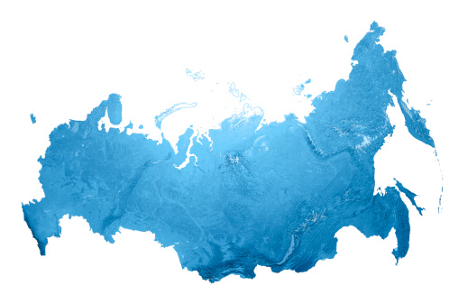

Features of Russia

Russia, country that stretches over a vast expanse of eastern Europe and northern Asia. Once the preeminent republic of the Union of Soviet Socialist Republics (U.S.S.R.; commonly known as the Soviet Union), Russia became an independent country after the dissolution of the Soviet Union in December 1991.
Russia
Russia
Russia is a land of superlatives. By far the world’s largest country, it covers nearly twice the territory of Canada, the second largest. It extends across the whole of northern Asia and the eastern third of Europe, spanning 11 time zones and incorporating a great range of environments and landforms, from deserts to semiarid steppes to deep forests and Arctic tundra. Russia contains Europe’s longest river, the Volga, and its largest lake, Ladoga. Russia also is home to the world’s deepest lake, Baikal, and the country recorded the world’s lowest temperature outside the North and South poles.
St. Petersburg
St. Petersburg
Cathedral of the Resurrection of Christ, St. Petersburg, Russia
Cathedral of the Resurrection of Christ, St. Petersburg, Russia
The inhabitants of Russia are quite diverse. Most are ethnic Russians, but there also are more than 120 other ethnic groups present, speaking many languages and following disparate religious and cultural traditions. Most of the Russian population is concentrated in the European portion of the country, especially in the fertile region surrounding Moscow, the capital. Moscow and St. Petersburg (formerly Leningrad) are the two most important cultural and financial centres in Russia and are among the most picturesque cities in the world. Russians are also populous in Asia, however; beginning in the 17th century, and particularly pronounced throughout much of the 20th century, a steady flow of ethnic Russians and Russian-speaking people moved eastward into Siberia, where cities such as Vladivostok and Irkutsk now flourish.
Russia: administrative divisions
Russia: administrative divisions
Russia’s climate is extreme, with forbidding winters that have several times famously saved the country from foreign invaders. Although the climate adds a layer of difficulty to daily life, the land is a generous source of crops and materials, including vast reserves of oil, gas, and precious metals. That richness of resources has not translated into an easy life for most of the country’s people, however; indeed, much of Russia’s history has been a grim tale of the very wealthy and powerful few ruling over a great mass of their poor and powerless compatriots. Serfdom endured well into the modern era; the years of Soviet communist rule (1917–91), especially the long dictatorship of Joseph Stalin, saw subjugation of a different and more exacting sort.
Britannica Money Britannica Money
Why Emerging Markets Might Be Worth Owning in a Diversified Portfolio
The Russian republic was established immediately after the Russian Revolution of 1917 and became a union republic in 1922. During the post-World War II era, Russia was a central player in international affairs, locked in a Cold War struggle with the United States. In 1991, following the dissolution of the Soviet Union, Russia joined with several other former Soviet republics to form a loose coalition, the Commonwealth of Independent States (CIS). Although the demise of Soviet-style communism and the subsequent collapse of the Soviet Union brought profound political and economic changes, including the beginnings of the formation of a large middle class, for much of the postcommunist era Russians had to endure a generally weak economy, high inflation, and a complex of social ills that served to lower life expectancy significantly. Despite such profound problems, Russia showed promise of achieving its potential as a world power once again, as if to exemplify a favourite proverb, stated in the 19th century by Austrian statesman Klemens, Fürst (prince) von Metternich: “Russia is never as strong as she appears, and never as weak as she appears.”
Russia can boast a long tradition of excellence in every aspect of the arts and sciences. Prerevolutionary Russian society produced the writings and music of such giants of world culture as Anton Chekhov, Aleksandr Pushkin, Leo Tolstoy, Nikolay Gogol, Fyodor Dostoyevsky, and Pyotr Ilyich Tchaikovsky. The 1917 revolution and the changes it brought were reflected in the works of such noted figures as the novelists Maxim Gorky, Boris Pasternak, and Aleksandr Solzhenitsyn and the composers Dmitry Shostakovich and Sergey Prokofiev. And the late Soviet and postcommunist eras witnessed a revival of interest in once-forbidden artists such as the poets Vladimir Mayakovsky and Anna Akhmatova while ushering in new talents such as the novelist Victor Pelevin and the writer and journalist Tatyana Tolstaya, whose celebration of the arrival of winter in St. Petersburg, a beloved event, suggests the resilience and stoutheartedness of her people: